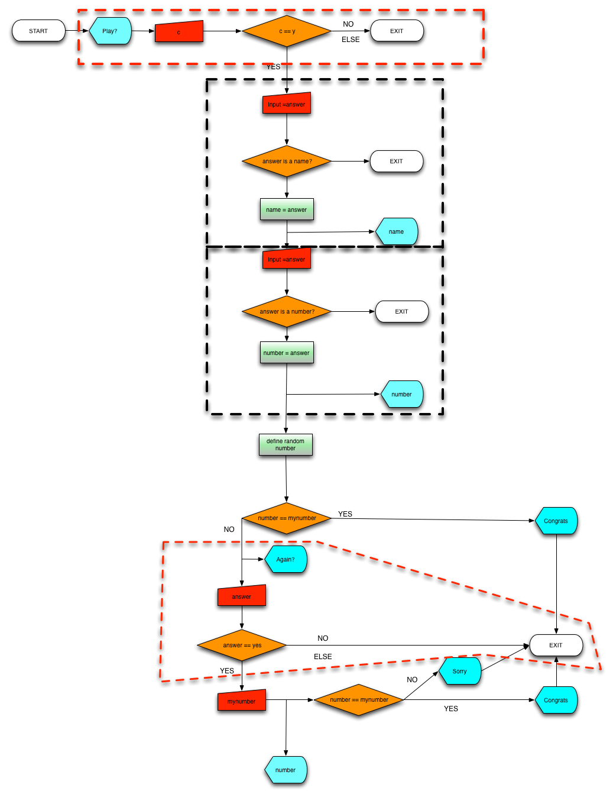

- What it is program statement.
- What it is program flow.
- Implement decision making in a program:
- if structure.
- if-else structure.
- nested if-else structure.
- switch statement.
- switch is equivalent to nested If-else.
Part IV: Statements and decision making
Arturo Narros Gonzalez
Introduction
Statements
C++ statements are individual instructions of a program:
- They all finished with a semicolon or ;.
- They are executed in the same order which they appear in the program.
We have already seen several statements, for example:
Variable declarations.
int x;Output lines: std::cout/cout.
cout << "x is 100";Input lines: std::cin/cin.
cin >> x ;
Program Flow and control flow statements.
A program can be defined as ordered execution of several computer statements. The execution order is given by the location in the program from the top to the button.
Control flow statements allows to prevent (Decision making) or repeat (Loop statements) execution of certain ones.
Here you can see two program flow diagrams from a very basic programs:

Can you interpret them?
Decision Making
if ( condition ) statement; : In case the condition is false, the statement is not executed.
if (m == 18) cout << "m is = 18";if ( condition ) { statement 1; statement 2;} : If you want to execute several statements under the same condition you need braces ({}). For example:
if (m == 18) { cout << "m is "; cout << m; }
if ( condition ) statement 1; else statement 2; : You want to execute a single statement if condition is true, otherwise statement2 is executed . In case you want to group several statements under the same condition you need keys, for example:
if (m == 18) { cout << "m is 18"; cout << "You are an adult person"; } else cout << "m is not 18";
Nested if conditions : You can combine if(){}else{} structures as for example:
if (m > 0) cout << "m is positive"; else if (m < 0) cout << "m is negative"; else cout << "m is 0";
switch : Similar to nested if-else, is used whenever a variable gets a constant value: Switch syntax is:
switch (expression) { case constant1: group-of-statements-1; break; case constant2: group-of-statements-2; break; . . . default: default-group-of-statements }
An example is:
switch (x) {
case 1:
case 2:
case 3:
cout << "x is 1, 2 or 3";
break;
default:
cout << "x is not 1, 2 nor 3";
}
Practice
EXERCISE 1: Please, create a new project (p8?) in the workspace and copy the source code of decision_making.cpp file on to the new main.cpp file:
- Read carefully the statements of the programme.
- Try to understand what is the possible output as a function of the possible input.
- Is there something missing in your opinion?
Here there is a scheme that might be useful to understand this program.

EXERCISE 2: Please, create a new project (p9?) in the workspace and copy the source code of decision_making2.cpp file on to the new main.cpp file:
- Read carefully the statements of the programme.
- Try to understand what is the possible output as a function of the possible input.
- What should be the code in case you want to give a second opportunity to the programme user?
Here there is a scheme that might be useful to understand this program.

EXERCISE 3: Please, create a new project (p10?) in the workspace and copy the source code of decision_making3.cpp file on to the new main.cpp file:
- Read carefully the statements of the programme.
- Try to understand what is the possible output as a function of the possible input.
- What will happen if the input in line 32 is not a text but a number?
- How will you change it in order to prevent such case?
Here there is a scheme that might be useful to understand this program.

EXERCISE 4: Please, create a new project (p10?) in the workspace and copy the source code of decision_making3.cpp file on to the new main.cpp file:
- Read carefully the statements of the programme.
- Try to understand what is the possible output as a function of the possible input.
- Can you be even more specific, for example, in line 77 the answer can be not a number... How can you change the code in order to prevent this case?
- Can you think in other cases when the programme might not work?
Here there is a scheme that might be useful to understand this program.

EXERCISE 5: Please, create a new project (p11?) in the workspace and copy the source code of decision_making3.cpp file on to the new main.cpp file:
- Read carefully the statements of the programme.
- Try to understand what is the possible output as a function of the possible input.
- Switch-statement can be easily transformed in a nested if-else statement. Can you please do it?
Here there is a scheme that might be useful to understand this program.

Functional programming

In this scheme you have dashed lines to group similar parts of the program, i.e., similar code that has similar functionality.
Conclusion
During this two labs and two lectures, I have introduced you:
- to basic concepts of general programming:
- Compiler.
- Portable program.
- Functional programming.
- a basic program in c++.
- CodeLite IDE.
We have learnt something of C++ and practise:
- Keyboard Input/ Screen output.
- Syntax in C/C++.
- Tokens and their rules in C++.
- Decision making: if and switch statements.
- Debugging in C++;